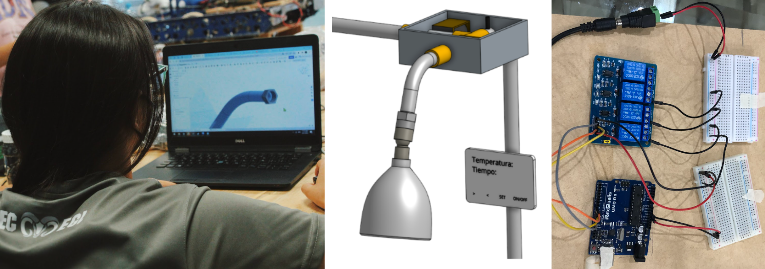
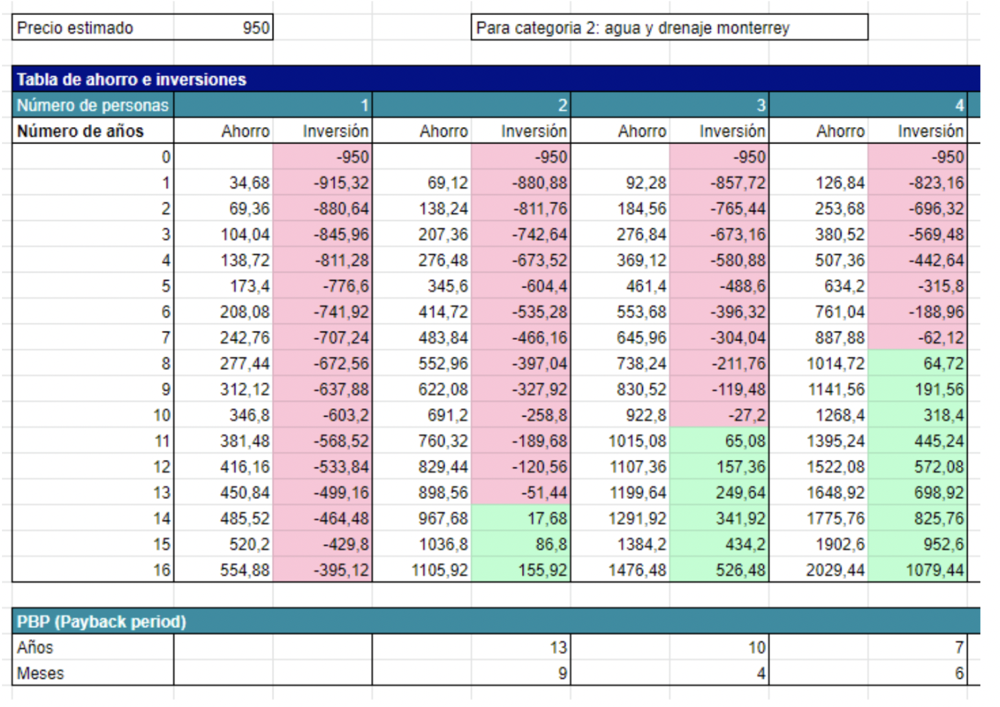

//Programado en Arduino y C++
En este hackaton, el objetivo era proponer una solución a la problemática de la escazes del agua. Junto con el equipo, se propuso una regadera inteligente, la cual en lugar de tirar el agua que aún no se ha calentado, la desvía por medio de electroválvulas solenoides a otro tanque. De igual manera, el prototipo detiene el flujo de caudal si no se detecta a nadie bajo la regadera.
Como parte del entregable, se trabajó en lo siguiente: